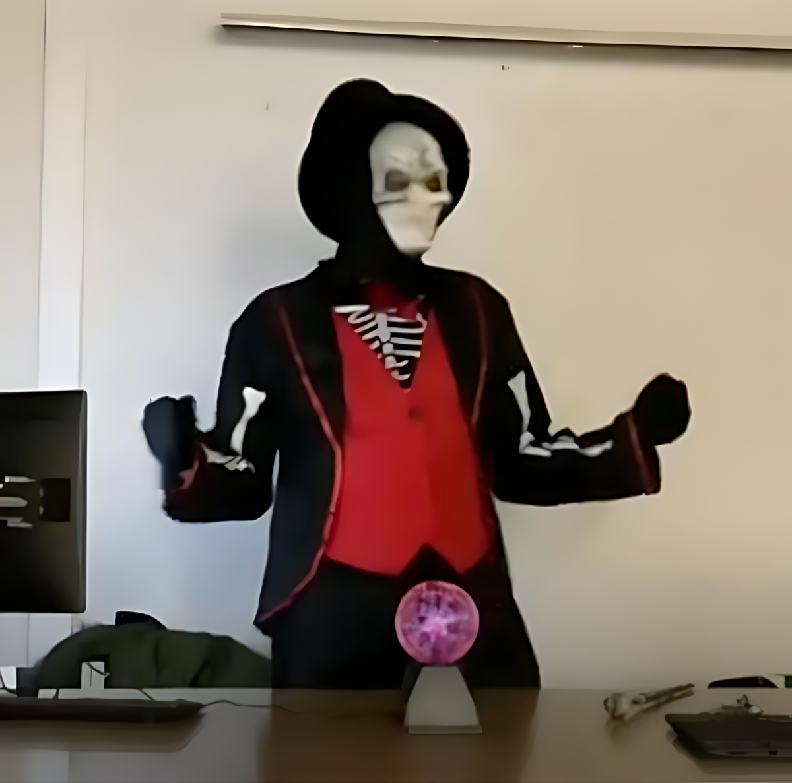

Sorpresa en clase

En mi caso, comienzo esta aventura con ¡una sorpresa para el alumnado!
Aparezco por sorpresa disfrazado de esqueleto en clase, sin que el alumnado lo sepa previamente, contándoles en el aula de TIC decorada y ambientada para este emocionante momento, que el Instituto tenía una maldición y que necesitaba su ayuda para resolver diferentes misterios. Posteriormente, el alumnado organizado en grupos y guiados por una APP móvil personalizada para cada grupo, recorren el instituto intentando resolver el misterio final antes de que la maldición recaiga sobre ellos.
De esta manera tan emocionante, pretendo fomentar la curiosidad de los estudiantes por la programación móvil y la creación audiovisual, ya que experimentan en primera persona las posibilidades creativas de crear un juego a modo gincana desde cero, que les permite divertirse y pasar una emocionante aventura en los pasillos y clases de su Instituto.
Esta aventura educativa, iniciada con ilusión en el curso 2021/22, no ha dejado de evolucionar. Su constante perfeccionamiento ha sido posible gracias al valioso feedback del propio alumnado y a mi compromiso personal con la mejora continua. Para que puedan sentir la emoción desde el principio, les invito a ver un breve vídeo que ilustra el momento exacto en que, durante el curso 21/22, encendimos la primera chispa de curiosidad en los estudiantes con la primera aventura.
Actualmente en el curso 2024/2025, nuestra gincana inaugural ha evolucionado hasta convertirse en una experiencia inmersiva y mágica. Ahora, la Inteligencia Artificial resucita al mismísimo Picasso, quien, como un espectro digital, se aparece en la plaza de su antiguo centro para susurrar pistas cruciales. La Realidad Aumentada nos permite ver a la ilustre Emilia Pardo Bazán sobrevolando nuestra sala de conferencias, y por si fuera poco, incluimos vídeos audiovisuales personalizados, donde yo mismo me transformo en personajes misteriosos revelando secretos inconfesables. Todo esto, unido a una aplicación repleta de mejoras y una ambientación en el centro que eleva la aventura a un nivel completamente nuevo.
No te preocupes si no te atreves o no te apetece realizar una sorpresa inicial para tu alumnado de este tipo. Puedes desarrollar igualmente el proyecto sin realizar esta actividadl, eso sí, si te apetece romper los moldes y dejar huella en tu alumnado, tienes la oportunidad perfecta para transformar el aprendizaje en un juego emocionante. Esta iniciativa es una forma fantástica de inyectar diversión, curiosidad y dinamismo en el día a día escolar, aprovechando los espacios comunes para un aprendizaje inesperado. Es más fácil de lo que parece, y el impacto en la motivación y la cohesión de los alumnos es sencillamente espectacular. ¡Anímate a sorprenderlos!
Si quieres sumarte a esta experiencia pero no sabes por dónde empezar, no te preocupes. He preparado un videotutorial que te guía paso a paso para diseñar una gincana sencilla en App Inventor, totalmente personalizable. Puedes adaptarla para realizarla en tu centro o en las calles cercanas al mismo.
Además, te animo a implicar a profesorado de otras asignaturas en el diseño de las pruebas y de la historia de vuestra gincana. Así, podréis convertir el aprendizaje en una aventura interdisciplinar inolvidable que unirá a toda la comunidad educativa y despertará la curiosidad en cada rincón del centro.
Si no has trabajado previamente con APP Inventor te recomiendo empezar por los tres primeros videoturoriales que puedes encontrar en la Fase 2 del proyecto
Vídeo con instrucciones que facilitan crear una gincana inicial sencilla:
Imagen 1: Serxio G.R